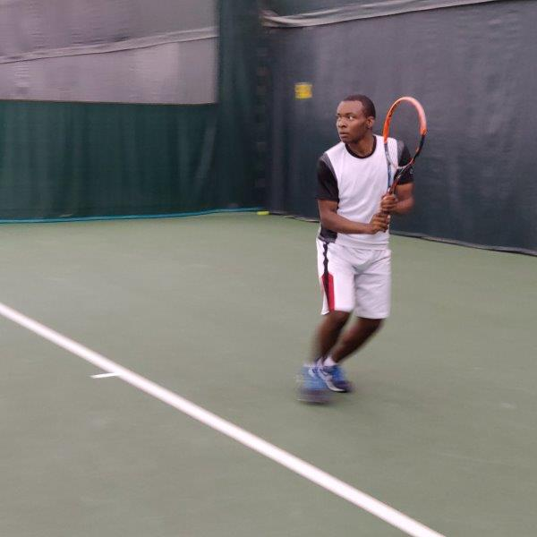

My Tennis Journey
I started playing tennis, when I was 8 years old, but stopped at 9. I didn't pick it back up until, I transferred to the high school I graduated from in my sophmore year. I joined their tennis team in my sophmore year of high school. At first, I only played doubles which is considered the lowest level, but I motivated myself to become bettter. By Junior year, I was the capitan of the team and I played the top singles spot on the team.
While I don't play tennis in college, I am still a huge tennis fanatic. During Quarentine, there isn't any new tennis matches to watch, but I still continue to watch reruns of the classics. Some of my favorite tennis players include Roger Federer, Francis Tiafoe, Serena Williams and Naomi Osaka. I hope one day I get the chance to go to all the grand slams on the ATP and WTA Tours.